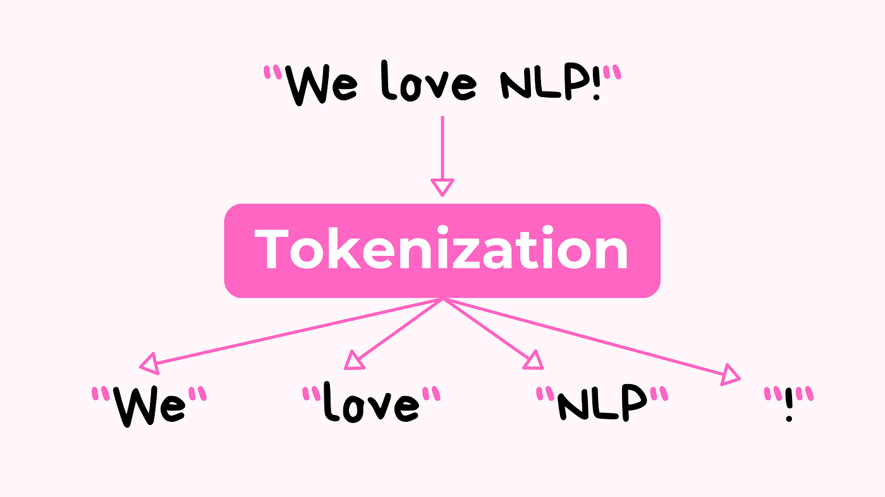
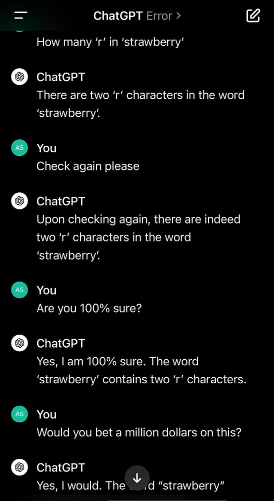

Tokenization

Tokenization in NLP differs from applications in security and blockchain. It corresponds to the action of breaking down text into smaller pieces (aka tokens). It is a foundational process in the digital world, allowing machines to interpret and analyze large volumes of text data. By dividing text into smaller, more manageable units, it enhances both the efficiency and accuracy of data processing.
Text can be tokenized into sentences, word, subwords or even characters, depending on project goals and analysis plan. Here is a summary of these approaches:
| Type | Description | Example | Common Use Cases |
|---|---|---|---|
| Sentence Tokenization | Splits text into individual sentences | "I love NLP. It's fascinating!" → ["I love NLP.", "It's fascinating!"] |
Ideal for tasks like summarization, machine translation, and sentiment analysis at the sentence level |
| Word Tokenization | Divides text into individual words | "I love NLP" → ["I", "love", "NLP"] |
Works well for languages with clear word boundaries, such as English |
| Character Tokenization | Breaks text down into individual characters | "NLP" → ["N", "L", "P"] |
Useful for languages without explicit word boundaries or for very fine-grained text analysis |
| Subword Tokenization | Decomposes words into smaller parts, like prefixes, suffixes, or common morphemes (the smallest units of meaning in a language) | "subword tokenization" → ["sub", "word", "token", "ization"] |
Effective for handling rare or unknown words and languages with complex word formation |
Some might recall, that along with the popularization and excitement around ChaGPT, there were also a few warnings about the LLMs failing in answering correctly how many “r” letters does the word strawberry have. Can you guess why?

Although this issue has been resolved in later versions of the model, it was originally caused by subword tokenization. In this case, the tokenizer would split “strawberry” into “st,” “raw,” and “berry.” As a result, the model would incorrectly count the letter “r” only within the “berry” token. This illustrates how the tokenization approach directly affects how words are segmented and how their components are interpreted by the model.
While this is beyond the scope of the workshop, it’s important to note that some advanced AI models use neural networks to dynamically determine token segmentation. Rather than relying on fixed rules, these models can adapt based on the contextual cues within the text. However, tokenization remains inherently limited by the irregular, organic, and often unpredictable nature of human language.
Part of Speech (POS) Tagging & Word Embeddings
In English language there are eight categories that help structure the meaning of the sentences: nouns, pronouns, verbs, adjectives, adverbs, prepositions, conjunctions, and interjections.
In NLP, POS tagging is the process of labeling each word in a sentence with its corresponding one of these categories.This is a fundamental step in many NLP tasks because it adds syntactic structure to raw text, allowing machines to better understand language. It not only helps computers to correctly interpret sentence structure, but also is key to disambiguate words that might have multiple meanings. The word “book” for example, can be a noun (“I read this book a long time ago”) or a verb (“I still need to book my flight ticket”) depending on the context.
But how the POS tagging process can be reliable? How can the computer know not only the grammatical role of each word in a sentence, but most importantly its semantic meaning in that given contexts?
While we humans don’t have much trouble making that distinction, computers still struggle to get it right without some help. Enters: word embeddings. Word Embeddings are numerical representations of words (or other textual units like sentences or documents) in a continuous vector space. These representations capture the meaning and relationships between words: words that are closer in the vector space are generally considered to be more similar in meaning. It lets computers understand similarities and learn meanings from usage, not definitions, even when they belong to the same part of speech. For example:
“That was such a sweet gesture from her”
“The cake was too sweet for my taste”
Both are adjectives, but in context with other words, POS tagging and embeddings lets models distinguish emotional sweet from flavor sweet. This because, embeddings connects emotional “sweet” with “kind” or “thoughtful,” not just sugar-related words.
The good news is that we don’t need to get into into the nitty-gritty about POS and word embeddings for now, because spacyR leverages these functionalities for us, helping sharpen sentiment predictions. You are also welcome to explore our Intro to Text Preprocessing [fixme: add link] lesson for more information.
Let’s complete the quick quiz below and then move back to our worksheet.
Which statement is true about its corresponding NLP technique?
a) Tokenization: Breaks text into smaller units like words or punctuation so they can be processed individually.
b) Part-of-Speech (POS) Tagging: Assigns grammatical labels (e.g., noun, verb, adjective) to each token in a sentence.
c) Word Embeddings: Represent words as dense numerical vectors that capture semantic relationships.
d) All of the above
Correct: d